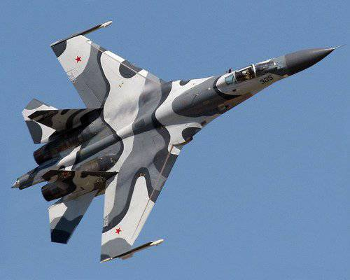

Су-27 (заводской шифр Т-10С; по кодификации НАТО: Flanker-B — «Фланкер-Б») — советский и российский многоцелевой всепогодный сверхзвуковой тяжёлый истребитель четвёртого поколения[2], разработанный в ОКБ Сухого и предназначенный для завоевания превосходства в воздухе. Также самолёт применяется для ракетно-бомбовых ударов по наземным целям. Является носителем тактических ядерных боеприпасов. Главными конструкторами Су-27 в разное время были Наум Семёнович Черняков, Михаил Петрович Симонов, Артём Александрович Колчин и Алексей Иванович Кнышев. Первый полёт прототипа состоялся в 1977 году. В 1982 году самолёты начали поступать в авиационные части, с 1985 года началась их эксплуатация, принят на вооружение 23 августа 1990 года. Су-27 является одним из основных самолётов ВВС России, его модификации состоят на вооружении в странах СНГ, Индии, Китае и других. На основе Су-27 разработано большое количество модификаций: учебно-боевой Су-27УБ, палубный истребитель Су-33 и его учебно-боевая модификация Су-33УБ, многоцелевые истребители: Су-30, Су-27М, Су-35, фронтовой бомбардировщик Су-34 и другие. Самолёты серии Су-27/30 на 2019 год занимали третье место по численности среди самых распространённых боевых самолётов мира, являясь самыми распространёнными боевыми самолётами российского производства[3]. 